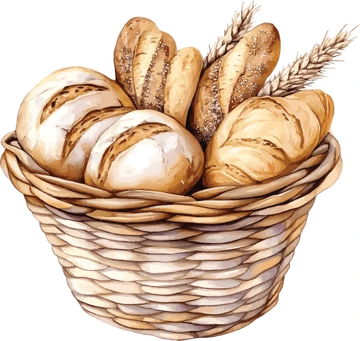

Historias del Trigo y la Panadería
Cinco relatos breves que combinan texto, imágenes y videos para hacer la lectura más agradable e informativa.

Cinco relatos breves que combinan texto, imágenes y videos para hacer la lectura más agradable e informativa.
